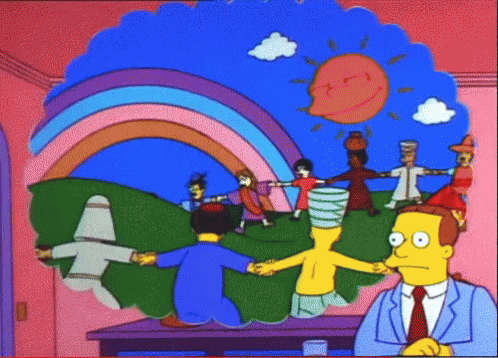

Comrades,
In the face of media monopolies that threaten to silence the diverse voices of our community, we stand at a crucial juncture. The liberation of our local narratives is not just a cause; it's a necessity for the vibrancy and truth of our collective expression.
We seek €500 to acquire an Intel Nuc — an essential tool in our struggle for freedom. This technology will democratize our ability to stream, giving power back to the people, enabling us to share our stories, on our terms.
Let's channel our resources for the common good, especially in light of recent revelations about the mayor's clandestine use of public funds for personal leisure, such as his secret pool. This misuse of communal assets underscores the urgency of our mission to advocate for a more communal allocation of the people's funds.
Together, we can safeguard our local media as a lighthouse of diversity, liberty, and defiance.
In solidarity, for the cause.
Mr.X
